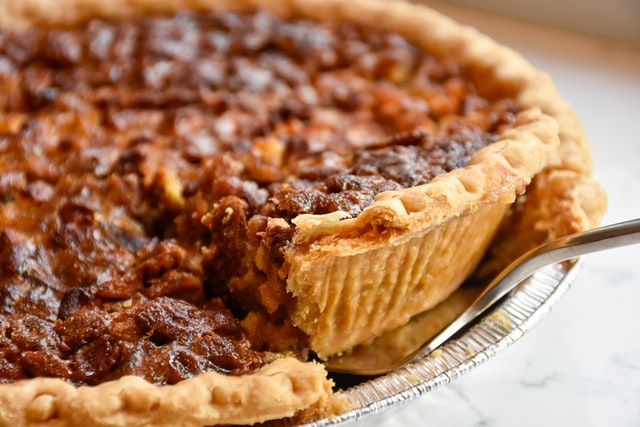
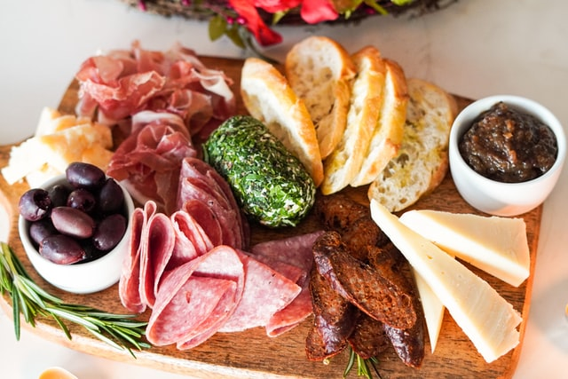

Discussion
Thanksgiving brunch sounds the most peculiar of brunches compared to the other holidays listed, but I made it a mission to find autumnal recipes that are perfect for a morning-to-noon meal.
Recipes
-
Pecan pie bites

Pecan pie is one of my favorite desserts (if not my most favorite), so I would love it to be in an autumn brunch.
I found a recipe by Maegan on The BakerMama for pecan pie bites, which I think would feature a snack-sized portion perfect for a small meal.
-
Charcuterie board

I think charcuterie is perfect for sharing (or eating by yourself, I won't judge) and it can offer a bunch of possible flavors.
I linked a recipe by Lauren Allen on Tastes Better from Scratch for a charcuterie board. I think this would be fun to prepare with another person you're planning to share with!